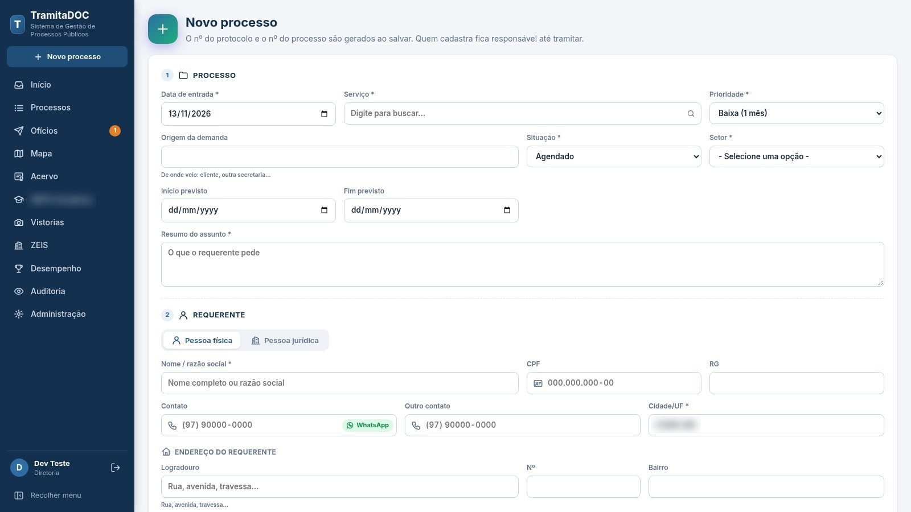
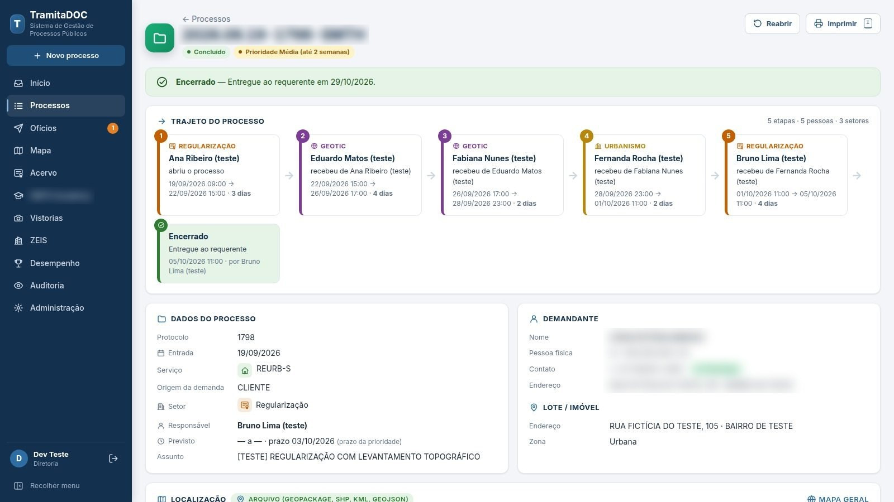
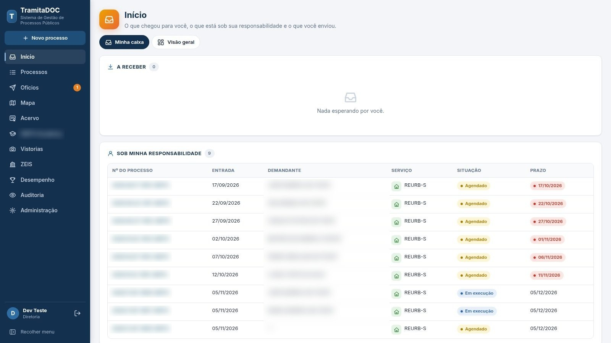
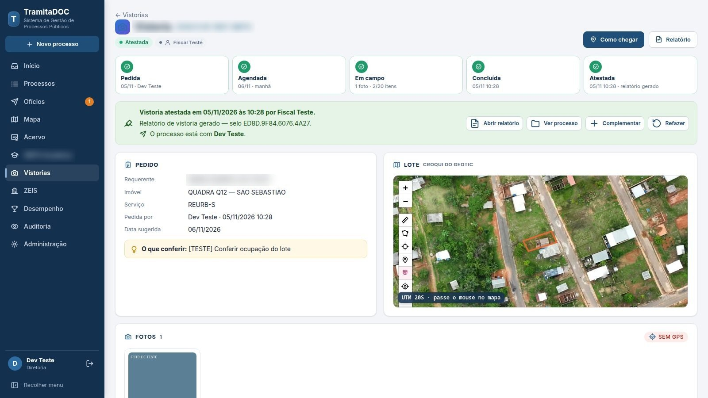
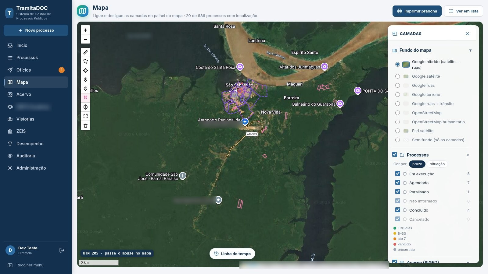
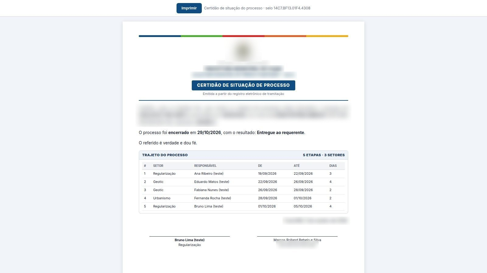
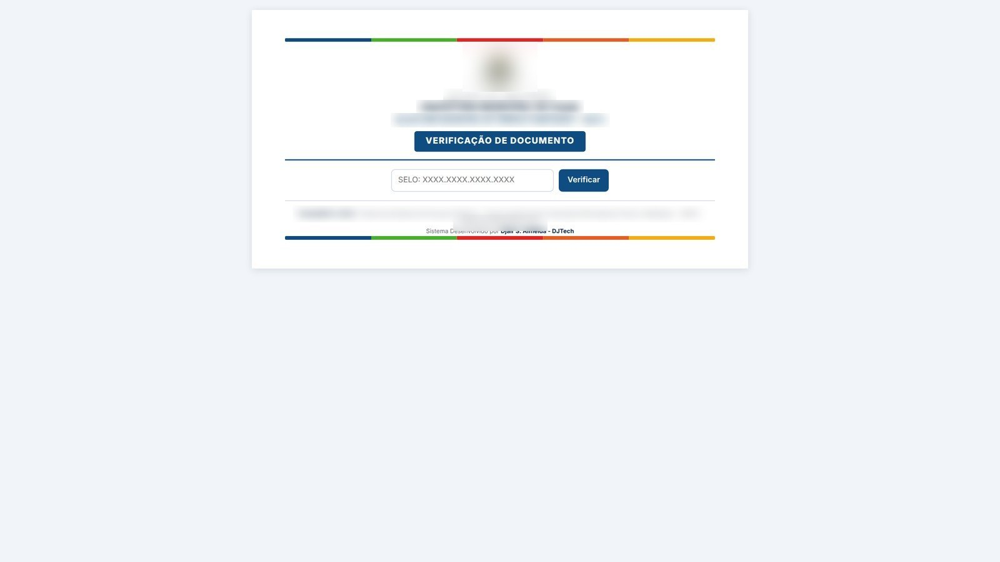
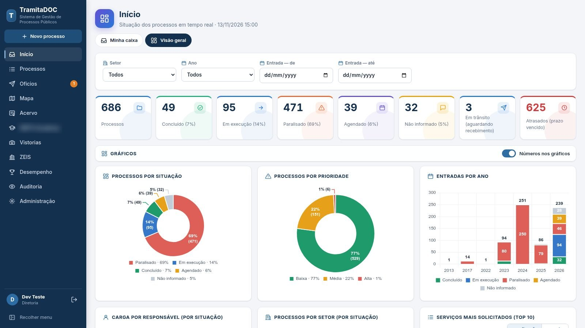
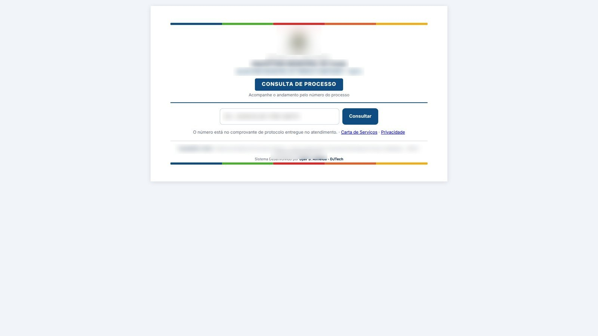

Sistema web de protocolo e tramitação de processos e documentos para órgãos públicos.
Sem um sistema, a resposta depende de procurar papel e perguntar de mesa em mesa.
Fica dias numa gaveta e ninguém percebe.
“Já mandei pra lá.” “Não chegou aqui.”
Folha extraviada, cópia sem original.
Sem foto, sem ponto no mapa, sem data.
Quem espera é o cidadão, que volta ao balcão sem resposta.
Do balcão ao arquivo, cada passo tem um responsável e fica no histórico.
Número do processo na hora
Muda de dono só quando é recebido
Fotos e GPS, mesmo sem sinal
Documentos com selo e QR Code
Ao salvar, o processo já nasce com número, responsável e histórico.

Cada setor por onde passou, quem recebeu e quanto tempo ficou.

O que está comigo, a situação e o prazo, em vermelho quando vence.

Do pedido ao atestado, passo a passo, com o lote no mapa e fotos.

Imagem de satélite e de drone, com camadas por situação e prazo.

Certidões e relatórios saem com o trajeto do processo, assinaturas, selo e QR Code.


Indicadores e gráficos sem planilha paralela.

Digite o número do protocolo e veja o andamento.

Dados e documentos nos servidores do próprio órgão (on-premise).
Cada pessoa vê e edita conforme o setor e o perfil.
Quem fez, o quê e quando, em cada registro.
Dados pessoais visíveis só para quem precisa.
Modelos de pesos abertos no servidor local: o processo e os dados pessoais não vão para APIs externas.
Leitura rápida de processos longos.
Rascunho para o servidor revisar e assinar.
Encontrar processos e normas pelo sentido.
A IA entrega rascunhos. Quem decide e assina é sempre o servidor.
Correções, treinamento por perfil, testes de campo e coleta de feedback.
Servidor e GPU, escolha do modelo, integração, testes e liberação, em paralelo aos testes.
Acompanhamento, correções e novas funções do roadmap.
Aponte a câmera para o QR Code ou acesse:
djaircode.github.io/tramitadoc
Desenvolvido por TramitaDOC · Djair Silva de Almeida